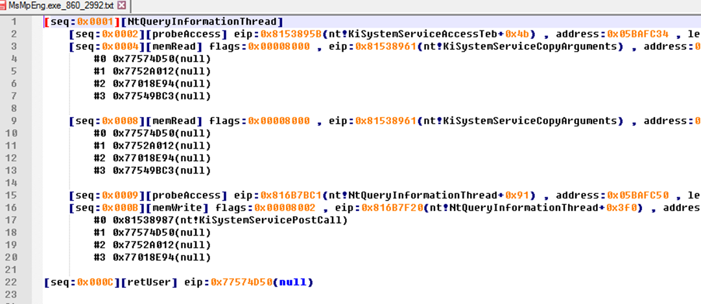
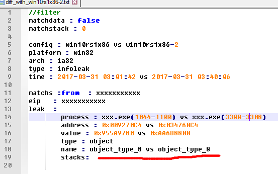
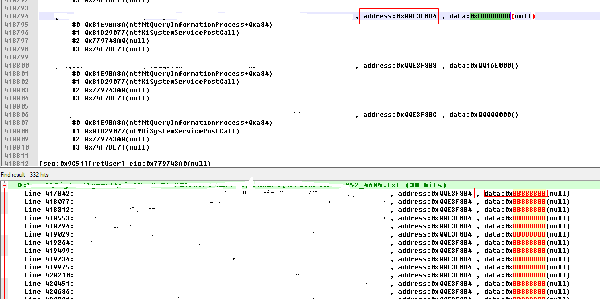

TL;DR
This Patch-Tuesday MS fixed 6 kernel information leak vulnerabilities reported by us, the details are at the end of this article.
I had already show how to fuzz the windows kernel via JS , today we will introduce a new method to discover windows kernel vulnerabilities automatically without fuzzing.
I selected a small part from the work in the past few months to spread out this topic.
KASLR
In Windows Vista and above, Microsoft enable Kernel Address Space Layout Randomization (KASLR) by default to prevent exploitation by placing various objects at random addresses, rather than fixed ones. It is an effective method against exploitation using Return-oriented Programming (ROP) attack.
Beginning with Windows 8, KASLR is enhanced with a newly introduced function ExIsRestrictedCaller.
Programs under medium integrity are not able to invoke functions such as NtQuerySystemInformation to obtain addresses of kernel modules, kernel objects or pools.
The functions include but not limited to:
NtQuerySystemInformation
* SystemModuleInformation
* SystemModuleInformationEx
* SystemLocksInformation
* SystemStackTraceInformation
* SystemHandleInformation
* SystemExtendedHandleInformation
* SystemObjectInformation
* SystemBigPoolInformation
* SystemSessionBigPoolInformation
* SystemProcessInformation
* SystemFullProcessInformation
NtQueryInfomationThread
NtQueryInfomationProcess
The above is the traditional way to get the kernel module address and kernel object address, as the kernel normal feature.
But after win8, low integrity application will fail in calling these functions.
In order to bypass KASLR, a direct countermeasure is to discover vulnerabilities that leak valuable information from the kernel mode to calculate the address of kernel module or kernel object.
Kernel Information Leak
As a kind of kernel vulnerability, it has its own uniqueness. For example, for the traditional memory damage vulnerabilities, the vulnerability itself will affect the running of the kernel. With the help of verifier and other tools, you can easily capture this exception among the normal traffic.
But the kernel information leak vulnerability does not trigger any exception, nor does it affect the running of the kernel, which makes it more difficult to be discovered.
Vulnerabilities objectively exist, what we need to do is to find them at lowest cost.
Discover ideas
When kernel information leak vulnerability occurs, the kernel will certainly write some valuable data to the user buffer.
So if we monitor all the writing behaviors to user buffer in the kernel, we will be able to find them.
Of course, the system does not provide this feature.
I capture the process with the help of a hardware virtualization based framework of pjf,
who is the author of the famous windows kernel anti-rootkit tool named iceSword.

In order not to affect the dest system itself, I monitored in the VMWARE guest and write some log files, and then further analyze them in the host system.

In the host machine, after decoding and analyzing the logs:

Then we have the human-readable logs:

Further Analysis
Now we have operation records in user memory buffer written by kernel.
Most of them are just normal functions.
We need remove nosiy data to find out the key information.
Two skills are needed.
Poison the kernel stack
Poisoning or polluting the target is a common idea.
At network penetration testing, there are also ARP and DNS cache poisoning.
Here is the kernel stack poisoning, refers to the pollution to the entire unused kernel stack space.
If a variable on a kernel stack is not initialized, then when this variable is written to the user buffer, there will be a magic value in the record written by me. Wherever these is a magic value, there is a leak.
I noticed that j00ru also used similar techniques in his BochsPwn project.
KiFastCallEntry Hook
In order to poison the kernel stack, I hooked nt!KiFastCallEntry.
So that when a syscall invoked, I can poisoning the entire unused kernel stack space.
Firstly, I used IoGetStackLimits to get the current thread stack range, and then from the bottom of the stack to the current stack location of the entire space are filled with 0xAA.
So when I entered the syscall, all the contents of the local variables on the kernel stack will be filled into 0xAA.
Poison the kernel pool
Similarly, for dynamically allocated memory, I used hook nt!ExAllocatePoolWithTag and so on, and polluted its POOL content.
If the kernel stack/heap variable is not properly initialized, it is possible to write this magic value to the user buffer.
With the help of the logs we captured, we can immediately find this vulnerability.
In order to remove the coincidence, I also used a number of magic value such as 0xAAAAAAAA , 0xBBBBBBB to exclude false positives.
A typical result after excluding the interference is as follows.

You can see that in a short monitoring process, it caught the 161 leaks in the system!
Of course, this is not exhaustive. There are not so many independent vulnerabilities, but some vulnerabilities made repeated leaks.
At this point we caught a real information leak vulnerability, there is stack information, supplemented by a simple manual analysis, we can got the details.
This is also the story behind the CVE-2017-8482.
Difference comparison
For the kernel information leak caused by the uninitialized stack, we can poison them at first and then find them.
But for the direct disclosure of key information, such as the module and the object address written directly, it cannot be found in this way.
In the process of the system running, the kernel itself will frequently write data to the user buffer, a lot of data is in the kernel address range, but in fact it is not a valid address, but a noise data.
There are many such noise data, such as strings, pixels, rect, region, etc. which are likely happen to be a kernel address. We need to rule out the noise and found a real leak.
Here we filter out some meaningful addresses, such as:
- Module address, must be inside in the system module list
- object address
- POOL address
After the environment changes, such as restarting the system, it must be able to leak the same type of data at the same location.
After the exclusion of the normal function of the system, such as NtQuerySystemInformation and similar functions, the left data’s credibility is very high.
The leak of module address
For example CVE-2017-8485
You can see that the results at this time is very obvious - the same stack, the same location, are leaked nt! ObpReferenceObjectByHandleWithTag + 0x19f

The leak of object address
Due to leakage of object address and POOL address not fixed by Microsoft this month, I cannot describe the details.

More
You can see that we do not need a fuzzer, only through the code coverage generated by normal running of the system itself, we found these vulnerabilities.
Any normal program running can improve this coverage.
In fact, in the actual work, I only use the game and the browser to improve coverage and got good results.
A game finished, ten kernel vulnerabilities on the hand.
The case of this month
CVE-2017-8470
CVE-2017-8474

CVE-2017-8476

CVE-2017-8482
CVE-2017-8485